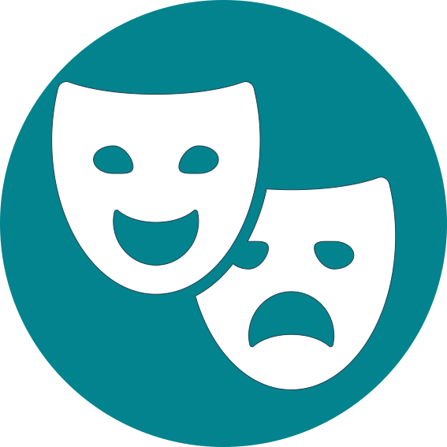
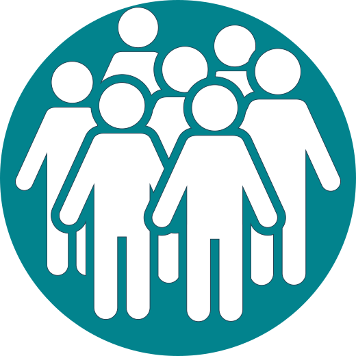

In onze missie komt de verbindende rol het meest prominent naar voor. Als koepel is het verbinden van mensen, lidverenigingen en gemeenschappen onze kerntaak. Bindus heeft hier door de jaren heen expertise in opgebouwd
Kritische Kritische-rol
In onze missie vermelden we expliciet dat we inzetten op inclusie en belangenbehartiging. Door de kaart te trekken van het ‘sociaal leren’ en door intersectioneel (andere woord vragen)te werken stellen we achtergronden en uitgangspunten van vertrouwde probleemdefinities in vraag.
laboratoriumrol
Via de laboratoriumrol wil Bindus vernieuwende antwoorden zoeken op maatschappelijke vraagstukken. We willen hierbij steeds meerwaarde creëren en garanderen voor het ruime publiek.
leerfunctie
Sociaal leren is het leren functioneren van groepen of sociale verbanden in nieuwe, onverwachte, onzekere en moeilijk te voorspellen omstandigheden.Dit perspectief op leren en de leerfunctie sluit het best aan bij de ambitie van Bindus om tijdens de nieuwe beleidsperiode in te zetten op diverse nieuwe en bestaande groepen.

cultuurfunctie
De federatie realiseert de cultuurfunctie vanuit de overtuiging dat iedereen cultuur bezit, dat culturen gelijkwaardig zijn en dat we van daaruit bruggen kunnen bouwen. We benaderen cultuur op twee manieren. Enerzijds zijn er impliciete waarden, normen, veronderstellingen, opvattingen en denkprocessen van individuen en gemeenschappen. Anderzijds onderscheiden wij expliciete uitingen zoals symbolen, ceremonies, verhalen, kledij, taal en kunst.

maatschappelijke bewegingsfunctie
De maatschappelijke bewegingsfunctie is essentieel voor de realisatie van burgerparticipatie. We stimuleren onze achterban tot deelname aan de democratie en we nemen voor hen ook onze rol op als belangenbehartiger.
.svg)